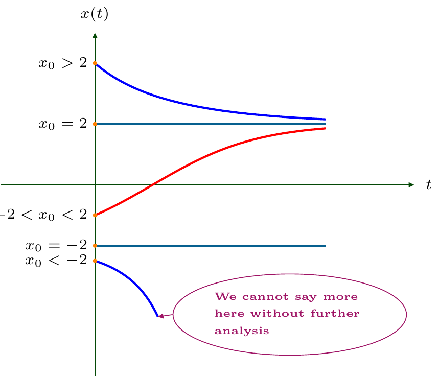

3 Phase portrait
3.1 Definition
Let \(f:(a,b)\to{\mathbb{R}}\) be a smooth function. A point \(x_*\in(a,b)\) such that
\[ f(x_*)=0 \tag{3.1}\]
is called a fixed point (a.k.a. stationary point) of the dynamical system (or differential equation)
\[ x'=f(x). \tag{3.2}\]
3.2 Remark
We will always assume (without further notice) that the equation \(f(x)=0\) has finitely or countably many solutions \(x\in(a,b)\).
In particular, it may not have solutions at all; but we exclude e.g. the case when \(f(x)=0\) on an interval.
3.3 Properties of fixed points
The constant function \(x(t)=x_*\) for all \(t\in{\mathbb{R}}\) (or another time interval) is a solution to the differential equation (3.2) (it is called the stationary solution).
The graph of this solution, that is the horizontal line \(x=x_*\), is, hence, a trajectory of (3.2).
As a result, any other trajectory of (3.2) does not cross nor touch that line.
3.4 Example
Consider the Malthus equation \(x'=-x\). Here \(f(x)=-x\), hence the only fixed point is \(x_*=0\). We consider now three trajectories for different signs of \(x_0:=x(0)\), including \(x_0=x_*=0\).
Suppose, we don’t know how to solve the equation \(x'=-x\).
One can still observe that \(x_*=0\) is the fixed point, hence \(x(t)\equiv 0\) is a stationary solution.
Next, we notice that, for \(x>0\), \(x'=-x<0\), i.e. the function \(x = x(t)\) is decreasing everywhere in the upper halfplane.
Similarly, for \(x<0\), \(x'=-x>0\), i.e. the function \(x = x(t)\) is increasing everywhere in the lower halfplane.
Finally, we know that the graphs of \(x=x(t)\), i.e. the trajectories, do not intersect the line \(x=0\).
Hence, the trajectories are like on the space-time diagram above.
3.5 Remark
We will discuss below (see Theorem 3.9) why, in this example, \(x=0\) is the horizontal asymptote for all other trajectories.
3.6 Phase diagram
Similarly, for a general equation \(x'=f(x)\), we are interested where \(f(x)\) is positive (hence, \(x\) increases), and where \(f(x)\) is negative (hence, \(x\) decreases).
To this end, one can consider the graph of \(f(x)\). Since we are studying the equation \(x'=f(x)\), one may think about \(x^{\prime}\) as a function of \(x\).
Since \(x\) “runs” over \({\mathbb{R}}\) which is, recall, called the phase space, the graph of \(f(x)\) on the coordinate plane \((x',x)\) is called the phase diagram.
We find (all) fixed points (that are solutions to \(f(x)=0\)).
3.7 Example
Consider \(x'=f(x)=4-x^2\). The fixed points are solutions to \(4-x^2=0\), i.e. \(x_1=-2\) and \(x_2=2\).
The fixed points split the horizontal axis on the phase diagram on several parts (the first and the last are infinite).
Naturally, the fixed points also split the vertical axis on the space-time diagram on the respectively equal parts (the lowest and the highest are infinite).
Since \(f\) is continuous, it preserves the sign on each of the parts bordered by the fixed points.
In our example, one gets then three intervals on the phase diagram.
And the corresponding three intervals on the space-time diagram.
One can get then sketches of the trajectories for the equation \(x'=f(x)\) on the space-time diagram.
Recall that, for each initial condition \(x_0=x(t_0)\), e.g. at time \(t_0=0\), there will be another trajectory.
Recall also that the horizontal lines which passes through the fixed points are trajectories, and that different trajectories do not have common points.
In our example, we have:
3.8 Phase portrait
- To get the sketch of the space-time diagram, we actually need to know the fixed points and how \(f(x)\) (and hence, \(x^{\prime}\)) alternates signs on the intervals bordered by the fixed points.
In the example above (\(x'=4-x^2\)), one actually needs this diagram only (a part of the phase diagram):
Recall, that our main aim is understand how the position of the point \(x\) evolves with time, i.e. how \(x(t)\) changes when \(t\) changes.
Then \(x'=x'(t)\) describes the velocity of this point. \(x'>0\) corresponds to the motion to the right direction, \(x'<0\) corresponds to the motion to the left direction.
Denoting the motion by arrows, one has (for \(x'=4-x^2\)):
The arrows along the phase space (that is the real line) describe the point’s motion qualitatively (i.e. we know where the point going, but we do not specify explicitly where the point is at each moment of time).
The phase space with marked fixed points and arrows, representing the directions of the point’s motion, form together the phase portrait of the dynamical system.
The phase portrait of the dynamical system \(x'=4-x^2\) is hence
The fixed points are like “traps”: the point can’t leave them.
If the arrows are directed towards a fixed point from both its sides, the fixed point is called a stable fixed point or a sink.
If the arrows are directed outwards a fixed point (in both sides), the fixed point is called an unstable fixed point or a source.
Therefore, a point always moves away from an unstable fixed point, and it always move towards a stable fixed point.
However, the point will never reach that stable fixed point (because of the uniqueness, as fixed points correspond to solutions), nor, evidently, “jump” over it, as we consider the continuous motion.
As a result, the point always remains in that interval of the phase bordered by the fixed points, where the point was at the initial time.
We will denote stable and unstable fixed points by
respectively.
Therefore, the phase portrait for the dynamical system \(x'=4-x^2\) is as follows:
Recall that, from the phase portrait, one can get the space-time diagram (as above).
3.9 Theorem: Convergence
Let \(f:(a,b)\to{\mathbb{R}}\) be a smooth function. Let \(x_*\in(a,b)\) be a stable fixed point of the dynamical system \(x'=f(x)\). Let \(x(t_0)=:x_0\in(a,b)\) be such that there are no other fixed points of the dynamical system between \(x_0\) and \(x_*\). Then
\[ \lim_{t\to\infty} x(t)=x_*. \tag{3.3}\]
3.10 Sketch of the proof
Suppose e.g. that \(x_0<x_*\). Since \(f(x_*)=0\) and there are no other fixed points on \((x_0,x_*)\), function \(f(x)\) preserves the sign on \((x_0,x_*)\). Since \(x_*\) is stable, the arrow on the phase portrait goes from \(x_0\) towards \(x_*\), hence \(f(x)>0\) for \(x\in(x_0,x_*)\), hence \(x'>0\), i.e. \(x(t)\) increases starting from \(t=t_0\).
The trajectory starts at \((t_0,x_0)\), increases, and can’t reach the line \(x=x_*\). Therefore, \(x(t)\leq x_*\), hence, \(x(t)\) cannot become unbounded. Also \((x_0,x_*)\subset (a,b)\). Hence both alternative in Theorem 2.3 are impossible, and, as a result, \(x(t)\) exists and is unique for \(t\in(t_0,\infty)\).
Denote \(x_n=x(n)\), \(n\in{\mathbb{N}}\). Then \((x_n)_{n\in{\mathbb{N}}}\) is an increasing bounded sequence, therefore, there exists \(x_\infty \in (x_0,x_*{\color{RedViolet}]}\), such that \[ x_n\to x_\infty, \qquad n\to\infty. \]
By the mean-value theorem, for each \(n\in{\mathbb{N}}\), there exists \(\theta_n\in(0,1)\), such that
\[ \begin{gathered} x(n+1)-x(n) \\ = x'(n+\theta_n) (n+1 - n) \\= x'(n+\theta_n) =f\bigl(x(n+\theta_n)\bigr). \end{gathered} \tag{3.4}\]
Since \(n<n+\theta_n<n+1\) and \(x\) is increasing, \(x_n\leq x(n+\theta_n)\leq x_{n+1}\). Then \(x(n+\theta_n)\to x_\infty\), \(n\to\infty\). Since \(f\) is continuous, \[ f\bigl(x(n+\theta_n)\bigr)\to f(x_\infty), \quad n\to\infty. \] Therefore, by (3.4), \(f(x_\infty)=0\). Thus, \(x_\infty\) is a fixed point, but there are no fixed points on \((x_0,x_*)\). Hence, \(x_\infty=x_*\).
Therefore, the convergence in (3.3) takes place when \(t\) runs over \(N\). Since \(x\) is increasing, we have \[ x([t])\leq x(t)\leq x([t]+1) \] where \([t]\) is the entire part of \(t\); that proves the convergence in (3.3) for real \(t\).
3.11 Horizontal asymptotes of trajectories
As a result, on the space-time diagram, the horizontal trajectories corresponding to the stationary solutions at stable fixed points are asymptotes for other trajectories.
3.12 Example: Re-visited Example 3.7
We considered the dynamical system \(x'=4-x^2\). It has two fixed points: \(x=2\) (stable) and \(x=-2\) (unstable). Hence, the space-time diagram looks as follows:

3.13 Example
Consider the dynamical system \(\color{RedViolet}x'=\sin x\). The fixed points are the solutions to \(\sin x=0\), i.e. \(x=0,\pi,-\pi,2\pi,-2\pi,\ldots\), or just \(x=k\pi\), \(k\in{\mathbb{Z}}\). Draw the graph of \(f(x)=\sin x\) and consider the signs of \(f\):
By drawing the corresponding arrows we conclude that \(x=0,2\pi,-2\pi\) and, in general, \(x=2k\pi\), \(k\in{\mathbb{Z}}\), are unstable fixed points, whereas \(x=\pm\pi\) and, in general, \(x=(2k+1)\pi\), \(k\in{\mathbb{Z}}\), are stable fixed points. Then, one can sketch (a part of) the space-time diagram for different initial conditions \(x_0=x(0)\).
3.14 Unstable fixed points
By the discussed above, if a trajectory starts between an unstable fixed point and a stable fixed point, it will converge asymptotically to the stationary solution (horizontal line) corresponding to the stable fixed point.
However, if a trajectory starts (at a time \(t_0\)) between an unstable fixed point and infinity (\(+\infty\) or \(-\infty\)), then two further scenarios are possible:
the solution \(x=x(t)\) exists on a finite time interval \(\color{RedViolet}(t_0,T_+)\) and then
\[ \lim_{\color{RedViolet}t\to T_+} x(t) = +\infty \text{ (or $-\infty$)}; \]
- the solution \(x=x(t)\) exists on an infinite time interval \([(t_0,\infty)]{.inlinealert}\) and then
\[ \lim_{\color{RedViolet}t\to\infty} x(t) = +\infty \text{ (or $-\infty$)}. \]
- There is no general criteria which of scenarios takes place…
We start with an example demonstrating the first scenario.
3.15 Example: Once again Example 3.7
The differential equation \(x'=4-x^2\) can be solved explicitly:
\[ x(t)=2\frac{ x_0 -2 + (x_0+2)e^{4 t}}{ 2-x_0 + (x_0+2)e^{4 t}}, \tag{3.5}\]
where \(x_0=x(0)\) is the initial condition. When \(x_0<-2\), the denominator converges to \(0\) iff \[ e^{4 t}\to\frac{x_0-2}{x_0+2} {\color{RedViolet}>1}, \quad t\to \dfrac14 \log \dfrac{x_0-2}{x_0+2}=:T_+ {\color{RedViolet}>0}. \]
One gets then the full space-time diagram:
3.16 Remark
Note that, for \(x_0>2\), the denominator in (3.5) also converges to \(0\) under the same conditions, however, in this case, \(\frac{x_0-2}{x_0+2} \in(0,1)\), hence this takes place iff \(t\to \frac14 \log \frac{x_0-2}{x_0+2}<0\) that is impossible (stress that this is just confirm our previous analysis).
3.17 Example
The simplest example demonstrating the second scenario in 3.14 is the dynamical system \(\color{RedViolet}x'=x\). Here \(f(x)=x\), hence the phase portrait is obvious:
Thus, the only fixed point \(x=0\) is unstable.
Recall that the solution is \(x(t)=x_0e^t\), where \(x_0=x(0)\). The space-time diagram is hence:
Hence the solution exists on \((0,\infty)\).
3.18 Linear stability analysis
Let \(x'=f(x)\) be a dynamical system with a smooth function \(f\).
So far, we obtained the phase portrait by either solving the inequality \(f(x)>0\) (or \(f(x)<0\)) or by sketching the graph of \(f(x)\).
Let \(x_*\) be a fixed point of \(x'=f(x)\), i.e. \(f(x_*)=0\).
If \(f(x)\) is negative from the left of \(x_*\) and is positive from the right of \(x_*\), then \(x_*\) is an unstable fixed point:
Hence \(f\) is increasing around \(x_*\), therefore,
\[ \color{RedViolet}f'(x*)\geq 0. \]
(To see why the equality is possible, think about \(f(x)=x^3\).)
- Similarly, if \(f(x)\) is positive from the left of \(x_*\) and is negative from the right of \(x_*\), then \(x_*\) is an stable fixed point:
Hence \(f\) is decreasing around \(x_*\), therefore, \[ \color{RedViolet}f'(x*)\leq0. \] (Again, the equality is possible, e.g. for \(f(x)=-x^3\).)
3.19 Theorem: Sufficient conditions
Let \(f:(a,b)\to{\mathbb{R}}\) be smooth on \((a,b)\), and let \(x_*\in(a,b)\) be a fixed point of the dynamical system
\[ x'=f(x), \tag{3.6}\]
i.e. let \(\color{RedViolet}f(x_*)=0\). Then
3.20 Remark
The mentioned above examples \(f(x)=\pm x^3\) demonstrate why the conditions of Theorem 3.19 are sufficient, but not necessary.
If \(f'(x_*)=0\), one cannot conclude anything about (un)stability of \(x_*\); one needs an additional analysis (see also Remark 3.27 below).
3.21 Analytical explanation
Suppose that, for a smooth \(f\),
\[ f(x_*)=0, \qquad f'(x_*)\neq0. \]
Let \(x(t)\) be close to \(x_*\), i.e. \(|x(t)-x_*|\) is small. Denote
\[ \eta(t):=x(t)-x_*, \]
then \(|\eta(t)|\) is small.
By Taylor’s formula,
\[ \begin{aligned} f(x(t))&=f(x_*+\eta(t))\\ &=f(x_*)+f'(x_*)\eta(t)+o(\eta(t)),\\ \text{ where } &\lim_{\eta(t)\to0}\frac{o(\eta(t))}{\eta(t)}=0. \end{aligned} \]
But \(f(x_*)=0\), hence
\[ f(x(t))\approx f'(x_*)\eta(t). \]
On the other hand,
\[ \eta'(t)=(x(t)-x_*)'=x'(t)=f(x(t)). \]
Therefore,
\[ \eta'(t)\approx f'(x_*)\eta(t). \]
In other words, \(x(t)=x_*+\eta(t)\), where \(\eta(t)\) behaves (for its small values) like the solution to the Malthus equation
\[ \eta'=f'(x_*)\eta. \]
The latter equation has the solution \[ \eta(t)=\eta(0)e^{f'(x_*)t} \] Therefore, if \(f'(x_*)<0\), then \(x(t)-x_*=\eta(t)\searrow 0\) as \(t\to\infty\), i.e.
\[ {\color{RedViolet}f'(x_*)<0} \quad \Longrightarrow \quad x(t)\to x_*,\ t\to\infty. \]
On contrary, if \(f'(x_*)>0\), then \(\eta(t)\) grows. Stress, that one cannot say that it will go to \(\infty\), since as soon \(|\eta(t)|\) becomes large, the previous considerations do not work, but, at least, we have that
\[ {\color{RedViolet}f'(x_*)>0} \ \Longrightarrow \ x(t) \text{ `runs away' from } x_*. \]
3.22 Remark
What we actually did, we replaced the study of a nonlinear differential equation \(\color{RedViolet}x'=f(x)\) by the study of its linearisation \(\color{RedViolet}\eta'=c \eta\), where \(\color{RedViolet}c=f'(x_*)\).
Recall that \(\eta(t)=x(t)-x_*\). One can hence “shift” the phase space, to have the origin at \(x_*\). For the shifted dynamical system, \(x_*=0\) is the fixed point, and we “replaced” \(\color{RedViolet}x'=f(x)\) by \(\color{RedViolet}x'\approx f'(x_*)x\).
3.23 Example: Logistic equation
Consider the dynamical system
\[ x'=ax(b-x), \qquad a,b>0, \tag{3.7}\]
that is nothing but the logistic equation (1.5). For \(f(x)=ax(b-x)=abx -ax^2\), we have two fixed points: \(x_1=0\) and \(x_2=b>0\). One can easily plot the graph of \(f(x)\) as we did in Example 3.7, but we will use the linear stability analysis instead of. We have \[ \begin{aligned} f'(x)&=ab -2ax, \\ f'(x_1)&=ab >0, \\ f'(x_2)&=ab-2ab=-ab<0. \end{aligned} \]
Therefore, \(x_1=0\) is an unstable fixed point, whereas \(x_2=b\) is a stable fixed point.
We immediately have then the phase portrait
Therefore, taking also into account Theorem 3.19, one gets the space-time diagram:
3.24 Remark
The previous problem is, actually, almost equivalent to that in Example 3.7. Namely, consider \(y=\frac{4}{b}x-2\), then \(x=\frac{b}{4}(y+2)\) and \[ \begin{aligned} y'&=\frac{4}{b}x'=\frac{4}{b} ax(b-x)\\& =\frac{4}{b} a\frac{b}{4}(y+2)\Bigl(b-\frac{b}{4}(y+2)\Bigr) = \frac{ab}{4}(y+2)(2-y). \end{aligned} \]
Next, one can change time, by writing \[ t=t(\tau):=\frac{4}{ab} \tau. \] Then, considering \(z(\tau)=y(t(\tau))\), one gets \[ \begin{aligned} \dfrac{d}{d\tau} z(\tau)&=\dfrac{d}{d\tau} y(t(\tau))= \dfrac{d}{dt} y(t) \cdot \dfrac{dt}{d\tau}\\ &= \frac{ab}{4}(y+2)(2-y) \cdot \frac{4}{ab}\\ &=4-y^2=4-z^2, \end{aligned} \]
that is nothing but the equation from Example 3.7. In the same way, one can show that all equations of the form \(x'=p(x-q)(r-x)\), \(p,q,r>0\), have, actually, the same phase portraits.
The “simplest” equation is, of course \(x'=x(1-x)\). The procedure described above is called nondimensionalisation: we exclude all parameters (\(a,b,p,q,r\)) from the equation, hence the space of parameters has not a dimension.
3.25 Remark
The logistic equation (3.7) has important applications, in particular, in biology. Namely, we interpret \(x(t){\color{RedViolet}\geq0}\) as the density of a population at time \(t\geq0\).
Recall that in the Malthus equation \(x'=rx\) the non-negative solutions, as \(t\to\infty\), may either converge to \(+\infty\) (when \(r>0\), demonstrating that the population growth without any bounds) or converge to \(0\) (when \(r<0\) demonstrating that the population extincts). In the logistic equation (3.7) (called also the Verhulst equation), the population stabilises, converging to \(b\).
If we know that a function \(g(x)\) is strictly positive on interval \((a,b)\), i.e. \(g(x)>0\), \(x\in(a,b)\), then the dynamical systems \(x'=f(x)\) and \(x'=f(x)g(x)\) have the same phase portraits. In particular, the trajectories on the space-time diagrams for these systems will be quite “similar”.
Below are the graphs of trajectories of the dynamical systems
\[ {x'=x(1-x)}, \qquad {\color{blue}x' = x(1-x)(2+\sin x)^k}, \qquad {\color{red}x'=x(1-x)(1+x^2)^k} \]
for \(k\in\{-3,-2,-1,0,1,2,3\}\) (note that, for \(k=0\), the dynamical systems coincide). For each system, we consider two trajectories, with initial conditions \(x(0)=0.5\) and \(x(0)=1.5\).
function euler(ode, t0, x0, h, tmax) {
let result = [{ t: t0, x: x0 }];
let t = t0;
let x = x0;
while (t < tmax) {
x += h * ode(t, x);
t += h;
result.push({ t: t, x: x });
}
return result;
}
function genLogisticEqn(t0, x0, x1){
let tmax = 5
if (k<0){
let tmax = 5 * Math.abs(k)
}
else {
let tmax = 5 / Math.abs(k)
}
let dt = 0.01
function eqn0(t, x) {
return x*(1-x);
}
function eqn1(t, x) {
return x*(1-x)*((2 + Math.sin(x))**k);
}
function eqn2(t, x) {
return x*(1-x)*((1 + x**2)**k);
}
// Solve the ODE using Euler's method
// let solution0 = euler(eqn0, t0, x0, dt, tmax);
let values0 = euler(eqn0, t0, x0, dt, tmax).map(a => [a.t, a.x]);
let values1 = euler(eqn1, t0, x0, dt, tmax).map(a => [a.t, a.x]);
let values2 = euler(eqn2, t0, x0, dt, tmax).map(a => [a.t, a.x]);
let values01 = euler(eqn0, t0, x1, dt, tmax).map(a => [a.t, a.x]);
let values11 = euler(eqn1, t0, x1, dt, tmax).map(a => [a.t, a.x]);
let values21 = euler(eqn2, t0, x1, dt, tmax).map(a => [a.t, a.x]);
let tmin = t0 - 0.01*tmax;
let xmax = 1.8;
return Plot.plot({
x: { domain: [tmin, tmax] },
y: { domain: [0,xmax] },
width: 640,
height: 240,
marks: [
Plot.line(
values0,
{
stroke: "black",
strokeWidth: 2
}),
Plot.line(
values01,
{
stroke: "black",
strokeWidth: 2
}),
Plot.line(
values1,
{
stroke: "blue",
strokeWidth: 2
}),
Plot.line(
values11,
{
stroke: "blue",
strokeWidth: 2
}),
Plot.line(
values2,
{
stroke: "red",
strokeWidth: 2
}),
Plot.line(
values21,
{
stroke: "red",
strokeWidth: 2
}),
Plot.ruleX([0]),
Plot.ruleY([0]),
Plot.axisX({ y: 0 }),
Plot.axisY({ x: 0 })
]
})
}
genLogisticEqn(0,0.5,1.5)
3.26 Definition: Half-stable point
If \(x_*\) is a fixed point to a dynamical system \(x'=f(x)\), so that the phase portrait (the direction of motion along the phase space) is not changing around \(x_*\), then \(x_*\) is called a half-stable fixed point.
3.27 Remark
Since \(f\) is smooth, we have that if \(x_*\) is a half-stable fixed point, then \(f'(x_*)=0\). However, the opposite is not true: if \(f'(x_*)=0\) then \(x_*\) may be:
stable (e.g. for \(f(x)=-x^3\)),
unstable (e.g. for \(f(x)=x^3\)),
half-stable (e.g. for \(f(x)=x^2\) or, differently, for \(f(x)=-x^2\)).
3.28 Graphical analysis
When we sketched the graph of \(f(x)\) and got from this the phase portrait for the dynamical system \(x'=f(x)\), we, actually, performed a simple graphical analysis.
The linear stability analysis is often a faster and a more straightforward way to get the phase portrait.
However, the graphical analysis becomes especially efficient, when e.g. cannot find values of the fixed points explicitly, thus, one cannot justify the sign of \(f'(x_*)\).
Surely, the graphical analysis itself cannot find the values of the fixed points in this situation, however, it may show how many fixed points are and what are their types (stable/unstable).
3.29 Example
Consider the dynamical system \[ x'=2-x-e^{-x}. \] The fixed points satisfy the equation \[ 2-x=e^{-x}; \] they are not given in elementary functions.
One can sketch the graph of \(f(x)=2-x-e^{-x}\), but it would be efficient if we proceed differently. One needs to know where e.g. \(f(x)>0\), or, equivalently, where \(\color{RedViolet}2-x>e^{-x}\). We plot the graphs of both functions \(y=2-x\) and \(y=e^{-x}\) on the same coordinate plane:
Comparing the points of intersections with the \(y\)-axis, one concludes that there are two points where the graphs intersect each other, let \(x_1<x_2\) be their \(x\)-coordinates.
By the sketch, for \(x_1<x<x_2\), one has that \(2-x>e^{-x}\), therefore, \(\color{RedViolet}f(x)=2-x-e^{-x}>0\), whereas, for \(x<x_1\) or \(x>x_2\), one gets that \(\color{RedViolet}f(x)<0\). This yields the phase portrait.
Therefore, \(x_1\) is an unstable fixed point, and \(x_2\) is a stable fixed point. (In particular, for each \(x(0)> x_1\), \(x(t)\to x_2\) as \(t\to\infty\).)
3.30 Convexity of trajectories
Recall that, a function \(x(t)\) is convex (respectively, concave) on an interval \([t_1,t_2]\), if its graphs lies below (respectively, above) the segment connecting the border points: \((t_1,x(t_1))\) and \((t_2,x(t_2))\).
Recall, also that a smooth \(x(t)\) is {convex} (respectively, {concave}) on an interval if and only if \(\color{red}x''(t)>0\) (respectively, \(\color{blue}x''(t)<0\)) on that interval.
For a dynamical system \(x'=f(x)\), we have \[ \begin{aligned} x''(t)&=\frac{d}{dt}x'(t)=\frac{d}{dt}f(x(t))\\ &=\frac{d}{dx}f(x(t)) \frac{d}{dt}x(t)=f'(x(t))x'(t)\\& =f'(x(t)) f(x(t)), \end{aligned} \] or, in brief, \(\color{RedViolet}x''=f'(x)f(x)\).
As a result, one can gets a simple rule:
\(x(t)\) is convex when \(x\) takes values on the intervals, where \(f\) and \(f'\) have equal signs;
\(x(t)\) is convex when \(x\) takes values on the intervals, where \(f\) and \(f'\) have opposite signs.
3.31 Example: Back to the logistic equation
Consider again the logistic equation \(x'=f(x):=ax(b-x)\). We will be interested in non-negative solutions only: \(x\geq 0\) (having in mind biological applications). Clearly, \(f(x)>0\) for \(x\in(0,b)\) and \(f(x)<0\) for \(x>b\). Next, \(f'(x)=a(b-2x)\), then \(f'(x)>0\) for \(x\in(0,\frac{b}{2})\) and \(f'(x)<0\) for \(x>\frac{b}{2}\). As a result, \(x(t)\) is convex when \(x\in(0,\frac{b}{2})\) or \(x>b\); and \(x(t)\) is concave when \(x\in(\frac{b}{2},b)\). In particular, if initially \(0<x(0)<\frac{b}{2}\), then \(x(t)\) will increase being convex until it reaches the level \(\frac{b}{2}\), and then it will become concave. If \(b>x(0)\geq\frac{b}{2}\), then it will be always concave.
3.32 Remark: Oscillations
As we could see, the motion of \(x\) over the phase space, for the solution \(x=x(t)\) of a one-dimensional dynamical system \(x'=f(x)\) with a smooth \(f\), is very straightforward: \(x\) always moves in a certain direction over some interval of the phase space bordered by fixed point(s) of the dynamical system.
If one of the interval borders is a stable fixed point (or a half-stable fixed point and \(x\) started from its stable part), \(x\) will converge to that point, otherwise \(x\) will go to infinity (the latter may be within a finite or infinite interval of time). Actually, arrows on the phase portrait gives the full description of the motion and limits when time growth. On the space-time diagram, we see that solution is always monotone (increasing or decreasing).
Therefore, if \(x\) goes in one direction over the phase space, it can’t stop and start moving in other direction. In particular, oscillations around fixed points are impossible. From the course of Classical Mechanics, however, we know that oscillations are typical for some differential equations (and hence dynamical systems) on the real line, e.g. describing the angular displacement of a simple pendulum from the equilibrium vertical position.
The corresponding solution is periodic as a function of time, not monotone. There is not any contradiction, as the corresponding equation includes \(mx''(t)\) (where \(x=x(t)\) denotes that angular displacement) because of the Second Newton’s Law. More generally, differential equations from Mechanics are typically of the form \[ mx''(t) = F(x(t),x'(t),t) \] (here \(m\) is a mass), and hence are second-order differential equations, i.e. all the previous theory does not work for them. If \(F\) above does not depend on \(t\), i.e. if we have \[ mx''(t) = F(x(t),x'(t)), \] then one can introduce new function \(y(t)=x'(t)\) and then (since \(x''=y'\)) we obtain a system of two coupled first-order autoinomous differential equations: \[ x'=y,\qquad y' =\frac{1}{m}F(x,y). \] The latter is an example of a dynamical system on plane \((x,y)\in{\mathbb{R}}^2\), and it will be considered in the Chapter II of this course. We will see that then, indeed, periodic solutions are possible.
3.33 Remark: Half-stable points and stability
In the Analytical explanation 3.21, we considered the solution to a dynamical system \(x'=f(x)\) near its fixed point: if \(f(x_*)=0\), then we considered \(x(t)=x_*+\eta(t)\) with a small \(|\eta(t)|\) (on some small time interval), and then the Taylor expansion yields: \[ \begin{aligned} \eta'(t)&=x'(t)=f(x(t))\\&= f(x_*)+f'(x_*)\eta(t)+\frac12 f''(x_*)\eta(t)^2\\&\quad +\frac16 f'''(x_*)\eta(t)^3+\ldots. \end{aligned} \] Since \(f(x_*)=0\), the evolution of \(\eta\) is approximately given by \(\eta'=f'(x_*)\eta\) for small \(\eta\). This works if \(f'(x_*)\neq0\), and then \(x_*\) is stable or unstable. If \(f'(x_*)=0\), then we get \[ \eta'(t)=\frac12 f''(x_*)\eta(t)^2+\frac16 f'''(x_*)\eta(t)^3+\ldots. \] If now \(f''(x_*)\neq0\), then, for small \(\eta\), \(\eta^3\) is much smaller than \(\eta^2\), and hence \[ \eta'(t)\approx \frac12 f''(x_*)\eta(t)^2 \] Therefore, in a small neihghbourhood of \(x_*\), the dynamical system behaves (recall, that \(x=x_*+\eta\) where \(x_*\) is just a constant) like \(\eta'=c\eta^2\) and thus \(x_*\) is half-stable.
Otherwise, if \(f''(x_*)=0\), but \(f'''(x_*)\neq0\), then \[ \eta'(t)\approx \frac14 f'''(x_*)\eta(t)^3 \] and hence \(x_*\) is either stable, if \(f'''(x_*)<0\), or unstable, if \(f'''(x_*)>0\).
If, however, \(f'''(x_*)=0\), then the forth derivative has to be considered, and so on.